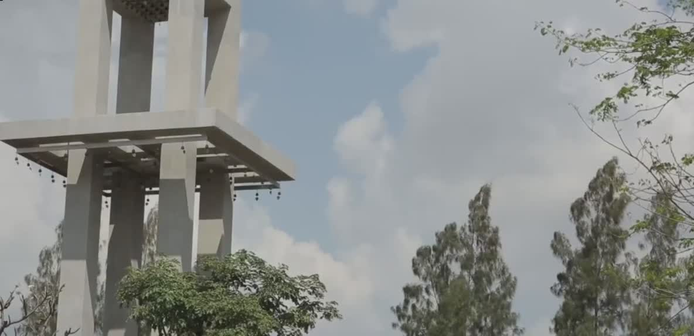

67
收藏
下载
分享
下一首播放


同艺人的其他MV
太傻
金志文
夏洛特烦恼
金志文
抓紧我放弃我
金志文
评论
从你的全世界路过66
04-26 19:02
好好听,喜欢！！！ 


陌生花开23
04-23 9:02
好久没有听到这种音乐了，太开心。 
流浪！流浪50
04-20 16:02
下一次的旅行，要带着这首歌去
我要养只阿拉斯加89
04-26 19:02
太赞了！！ 
远方200
04-26 19:02
明天就出发。。。去想去的远方 
欢迎小伙伴踊跃评论！！
久违的一场旅行~~~久违的《远走高飞》2015年开始，金志文展开与一把吉他的音乐之旅，在每一场的旅行中 将自我回归自然，用心去感受美好，去创作音乐。在一次次的行走中积累下近百首Demo，这些创作让金志文寻找到了自我 ，寻找到了对音乐的初衷，也即将让大家认识到一个全新的金志文。2017年金志文宣布这次 音乐之旅以 EP的形式率先发布，内含4首得意之作，都是金志文慎重挑选的首发作品，这四首歌不能说是近百首Demo 中的最佳代表，因为音乐，艺术本无法衡量，但是却有着特殊的意义，代表了这次音乐之旅的创作 初衷，也揭开了一个序幕。《远走高飞》则是开篇之作，身为华语乐坛的唱作代表，金志文 包揽了歌曲的作曲，编曲，制作，整张EP的全部歌词与音乐人王耀光合作，保证了风格色彩的统一和更具整体概念化，《远走高飞》曲风明快跳跃，犹如清风袭面，歌词的 描述仿佛能看到旅途中的风景，每个韵脚完美的配合发音更具口感，是的听觉达到更好的效果。在录音和缩混的期间 金志文反复的调试为了保证更好的效果，甚至在单曲首发的最后一天还在修改。值得一提的是这首歌在EP中还将献上与徐佳莹的合唱版，以及live的现场版的mv,让人 充满期待，这次的 音乐之旅的所见所闻所想将用音乐的形式向听众展现。